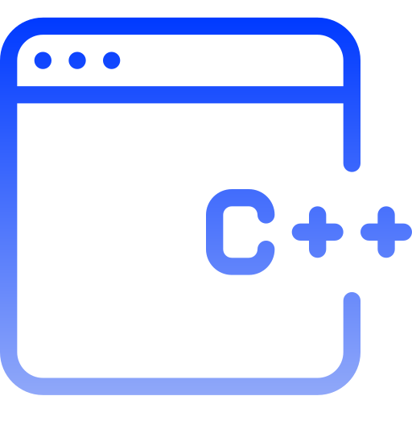

Hi, My name is Sameer
I am a Passionate

Work Experience
Frontend Developer (2022 - 2025)
I started my journey as a front-end developer, where I focused on building interactive and visually appealing web interfaces. I learned the fundamentals of web development, including HTML, CSS, and JavaScript, which allowed me to create responsive and user-friendly websites. Through hands-on projects and continuous learning, I developed a strong understanding of front-end technologies and best practices

C++ Programmer (2021 - 2025)
I began my journey as a front-end developer, mastering HTML, CSS, and JavaScript to build interactive and responsive web interfaces. After gaining experience in web development, I transitioned to C++ programming, where I worked on numerous projects that enhanced my problem-solving skills and understanding of low-level programming concepts. Through these projects, I developed a strong foundation in algorithms, data structures, and system programming, further strengthening my coding expertise.

Python Developer (2023 - 2025)
I started as a front-end developer, mastering HTML, CSS, and JavaScript to create interactive and responsive web interfaces. After gaining experience in web development, I transitioned to C programming, where I worked on multiple projects, strengthening my problem-solving skills and understanding of low-level programming. Later, I expanded my expertise by learning Python, which opened up new opportunities in automation, data analysis, and backend development. I built numerous projects using Python, further enhancing my coding skills and versatility as a developer.

Coder (2022 - 2025)
Currently, I am learning Data Structures using C, focusing on optimizing algorithms, memory management, and improving efficiency in problem-solving. This journey is helping me build a strong foundation for software development and competitive programming.